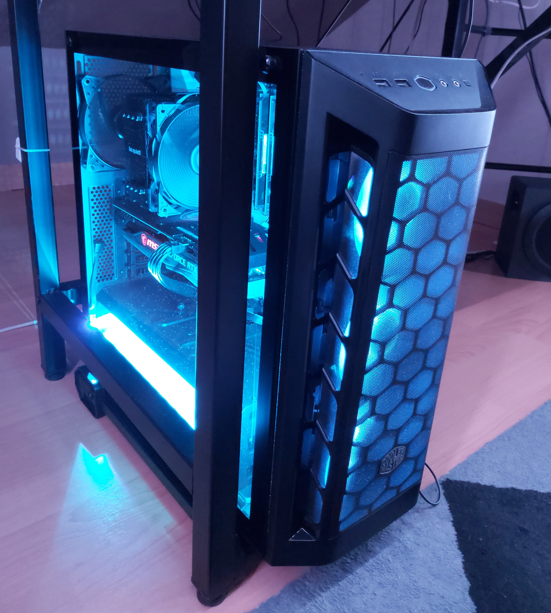
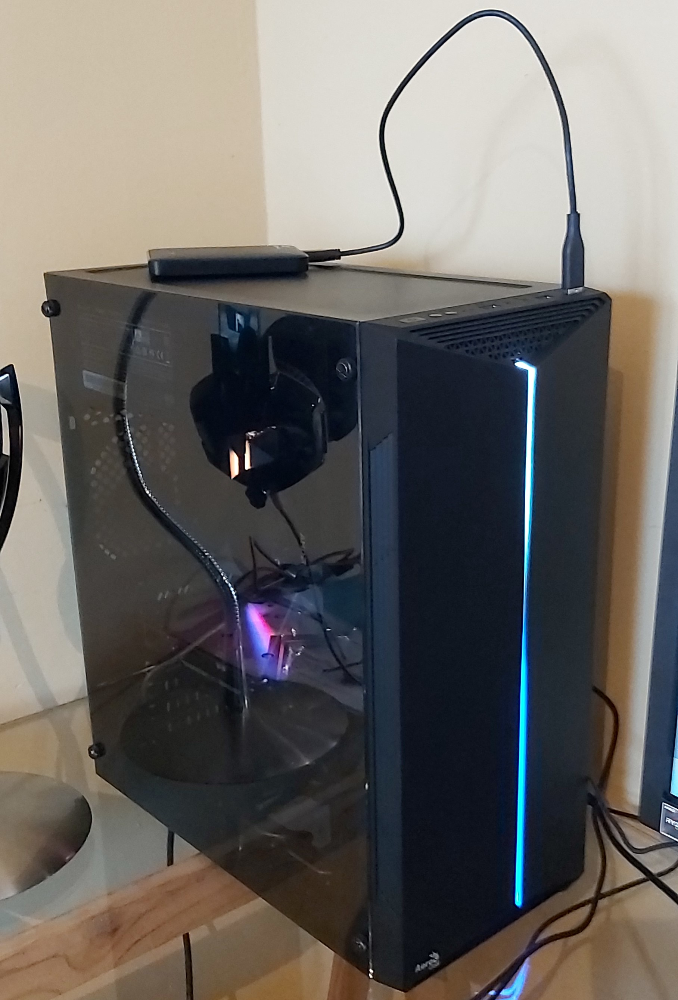

Pour ce qui est de mes passions, j'aime beaucoup jouer aux jeux-vidéos, créer des vidéos sur YouTube, faire des lives sur Twitch, mais aussi monter des PC. J'ai aussi fait du Tennis dans un club, qui était mon sport pendant 4 ans, de 2012 à 2016.
Mes Centres D'intérêts
Le Tennis
Le Tennis, a fait partie d'une de mes premières passions les plus importantes. En effet, j'ai pu commencer ce sport à partir de l'année 2012 (quand j'étais en CM2) dans un Club (TC2T).
J'en faisais tous les mercredis soir pour m'entraîner. Ce sport m'aidait beaucoup : pour me dépenser, et penser à autre chose que les cours. J'ai alors continué ce sport pendant 4 ans, jusqu'en 2016 où j'ai décidé d'arrêter par faute de temps.

YouTube et Twitch
À partir de mai 2017, j'ai pu créer ma première chaîne YouTube avec l'aide d'un ami à moi. Cette chaîne se nomme : DOUBLE_T. Le nom de chaîne fait référence à mon prénom (Thibaut) avec un T au début, et un T à la fin.
Le but en créant cette chaîne YouTube, était de proposer du contenu sur un jeux que j'aime très particulièrement : Minecraft, mais aussi de commencer à avoir quelques bases dans le montage vidéo.
Les vues ont commencé à être au rendez-vous sur la chaîne, et les abonnés commençaient à monter. Plus tard, j'ai décidé que la chaîne ne porterait pas que sur Minecraft, mais sur d'autres jeux (PS4 ou PC).

Puis, j'ai commencé à créer une chaîne Twitch pour diffuser des Lives sur différents jeux. Cette chaîne se nomme : DOUBLE_T_FR. Pour l'instant je n'ai pas trop fait de Lives, et je n'ai pas trop de personnes qui me suivent.
Mais mon but est d'évoluer en termes de contenu pour les Lives, et divertir les gens, toujours dans la bonne humeur.

Le Montage de PC
J'ai débuté le montage de PC vers 2019. J'ai d'abord fait pré monté mon PC, chez un informaticien à Colmar, plus précisément chez AMS (Alsace Micro Services), car je ne savais pas encore monter un PC moi-même.
Après cela, j'ai voulu changer le boîtier.
J'ai donc préféré le changer moi-même, pour avoir plus de connaissances sur les composants, et acquérir des compétences (photo de gauche). J'ai donc réussi à changer le boîtier sans soucis.
Plus tard en 2021, j'ai pu aider à monter le tout premier PC d'un ami (photo de droite).


In English Please ?